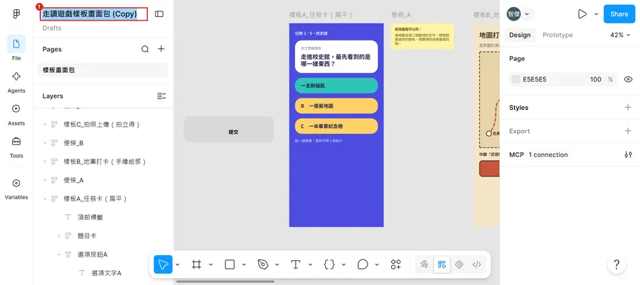

文化遊戲松實作 · W11 · Figma 1/3
用 Figma 為你的小遊戲畫一個畫面
最後更新：2026-11-13 01:00
後半學期，你會從十二種小遊戲樣板裡挑一個，一路改成你自己的作品。第一步先畫出它的樣子：用 Figma 畫一個畫面，輸出成圖片。下週會把這張圖交給 AI Studio，做成會動的東西。
今天課堂做完，期限不是讓你拖。做到哪一階都可以交。
認識十二種樣板，挑一個
每一種玩法不同，要畫的畫面也不同。示範人物與法器都來自《小封神》；你畫自己的內容時，請標清楚哪些是原著、哪些是你改的、哪些是你加的。
這週的畫面包有前面六種（故事、走讀、解謎、經營、卡牌、節奏）。如果你挑的是後面六種（潛行、談判、塔防、爬塔、拼接、跑酷），先選畫面包裡最像的一個畫面來畫，下週會補上你那個樣板的畫面包。
課堂先做玩兩版，再回答一個問題
約 18 分鐘。每個樣板都有兩個版本：一版「文化只是皮」，一版「文化長在規則裡」。看看差在哪裡。
- 先猜：玩之前，你覺得這兩版各會落在哪個答案（下面四個選一個）？
- 再玩：老師分一半的人玩一個樣板、另一半玩另一個。兩版都玩一輪。
- 判斷：把文化抽掉，這個遊戲還玩得下去嗎？選一個：照樣玩／故事垮了，玩法還在／玩法本身就垮了／說不準。再寫一句為什麼。
- 換人講：跟旁邊玩另一個樣板的人，各講三句：你玩的像什麼、抽掉文化會怎樣、你的答案跟猜的一樣嗎。
玩樣板時，右下角如果出現「🧭 助教」，它只會問你問題，不會替你做。
概覽這份作業一頁看完
| 要交什麼 | Figma 連結（確認別人打得開）和一張匯出的 PNG。繳交留言寫：一句話「你想讓玩的人有什麼感覺」，加上「誰的決定」三項。 |
| 大約多久 | 課堂 100～120 分鐘，今天做完 |
| 開放與期限 | 11/18（三）09:10 開放，11/25（三）09:10 截止 |
| 做完接哪一份 | 下週 AI Studio 1/3：把你的圖和樣板交給 AI Studio，做成會動的畫面。再下一週（W13）才開始用 Claude 免費版幫忙。 |
| 評分 | 以 flipclass 這份作業的說明為準 |
步驟六步做完這一份
每一步是一張卡片，點標題可以收合或展開。英文按鈕的中文意思放在括號裡。
1玩兩版，再把十二個樣板都看一眼約 30 分鐘
先照上面「玩兩版」做約 18 分鐘。接著用約 12 分鐘把其他樣板的首頁看一眼（老師會給連結），每個 1 分鐘：它練哪一類文化、要畫什麼畫面。邊看邊想：我最想畫哪一個的畫面？
做完的樣子：你心裡有一個最想畫的樣板，也寫了「玩兩版」的答案和一句為什麼。
卡住了：某個樣板打不開，就先玩其他的，問老師。
2挑一個樣板，登入 Figma約 10 分鐘
挑定一個樣板，後半學期都用它。打開 figma.com，按「Continue with Google（使用 Google 帳號繼續）」，選學校信箱登入；沒有帳號就用學校信箱註冊，免費版就夠用。
做完的樣子：看到你的檔案首頁。


3打開小封神樣板畫面包，複製成自己的一份約 10 分鐘
老師會給「小封神樣板畫面包」的連結，裡面有六個手機畫面，對應前面六種樣板。這個檔案只能看，所以一定要先複製：按檔名旁邊的小箭頭 ▾，選「Duplicate to your drafts（複製到我的草稿）」。跳出「Where do you want your duplicate?（你要把副本放哪裡？）」時，點你自己的草稿或團隊那一列。約 2 秒後副本會在新分頁打開，檔名後面多了「(Copy)」，底部出現編輯工具。之後都在這個新分頁改。
做完的樣子：檔名有「(Copy)」，檔名下的灰字是 Drafts（草稿）。
卡住了：同一個選單裡有「Move to trash（移到垃圾桶）」，不要點。


接著點一下上方的檔名，按 Ctrl＋A 全選，改成「班級＋你挑的樣板」（例如「通識 解謎畫面」，不用寫自己的名字），按 Enter。其他五個畫面不用刪，不要動。

4在你挑的那個畫面上，改三處約 40 分鐘
在左邊 Layers（圖層）欄點你挑的那個畫面，畫布會框出它。每個畫面旁邊有一張黃色便條，寫了「這個畫面可以改」的地方。改三處：
- 一處改文字：把標題、人物名字、台詞或按鈕上的字，換成你自己的主題。要讓玩家一看就知道「現在該做什麼」。
- 一處改顏色：點一個方框，右邊面板往下捲到「Fill（填色）」，點色塊或輸入色碼。
- 一處自選：加一個按鈕或一張小圖，或把版面的位置換一換。
標內容出處：畫面裡用到的每個內容，旁邊用小字標一個出處：原著／民間說法／工坊創作／遊戲設計／田野所得。不確定就標「待查」，不要硬選。
改文字：雙擊兩下才會進入編輯（第一下會選到裡面的圖層）；出現閃爍的游標後，按 Ctrl＋A 全選，輸入新的字，按 Esc 離開。改錯了按 Ctrl＋Z 還原。
加按鈕：按 R 拉一個方框（H 設 56、W 設 340），再按 T 在方框上打字，字色改白色。先畫在畫面外面，練習好再放進去。


- 第 1 階 換內容：把示範的小封神角色，換成你家附近廟口或市場的一個人物或東西。
- 第 2 階 換規則：畫面上的資訊與按鈕，要反映一條你想改的規則。例如經營畫面多一個「香火」數字，或卡面多一個相剋標記。
- 第 3 階 換形式：把這個畫面改成另一種樣板的畫面，例如把卡面改成解謎的線索卡。
AI 做不到、要靠你的部分：畫面上至少放一個你親眼看到、親耳聽到、或親手記下的細節（例如廟門口的對聯、某個攤位的招牌）。11/14 走讀的照片和筆記都可以用。
5匯出成 PNG 圖片約 5 分鐘
不要自己截螢幕。①左邊 Layers 點畫面的名字，畫布出現藍框和尺寸；②右邊面板捲到最底，按 Export 旁的「＋」，格式選 PNG（1x 或 2x 都可以）；③按「Export ＜你的畫面名稱＞」，瀏覽器會下載「畫面名稱.png」。
做完的樣子：檔案出現在瀏覽器的下載清單（右上角的下載圖示）。這張圖下週要用，請存好。

6確認別人打得開，交件約 5 分鐘
按右上角藍色的 Share（分享），看「Who has access（誰有存取權）」：「Anyone」那一列右邊要是「can view（可以檢視）」，不是 can edit。確認後按「Copy link（複製連結）」，用無痕視窗貼上連結，打得開才算。到 flipclass 這份作業貼上連結並上傳那張 PNG。連結打不開，視同未繳交。

問卷課程自我檢核（約 1 分鐘）
這份問卷不計分、跟成績無關，也沒有標準答案。請照你實際的情況填——「主要為了學分」「照指示做完就交」都是很常見、很正常的答案，填了不會有任何影響。問卷由徐芳真老師收，只寫你的編號、不寫名字；學期成績送出之前，楊老師不會看到任何人的答案。
在新分頁開啟 嵌在這頁打不開時，用這個連結。
填完，或選「這次不填」，會看到完成畫面，上面有一組完成碼。把完成碼交到 flipclass 的「W11 問卷」作業，就算完成。
誰的決定交件時寫三項
每週至少寫一次；換規則或換形式的版本一定要寫。很短就好，目的是讓你自己看清楚哪些是你決定的。以後在樣板頁面存版本時也會問這三項，存好會給你一段可以複製的字。
- 這一版裡，哪些部分交給了 AI？從下面挑（可以多個）；沒有用 AI 就寫「沒有用 AI」。
- 這一版裡，哪一兩處是你自己決定的？
- 其中一處，你為什麼這樣決定？一句話就好。
| 案例庫導航員 | 找案例、整理手法 |
| 穿越時空抓包機 | 故意做錯讓你找碴 |
| 採集標記師 | 把田野看到的整理成關鍵字 |
| 文本對話員 | 讀文本、補背景知識 |
| 觀點模擬器 | 寫人物的內心獨白 |
| 風格鍊金術師 | 改成另一種風格 |
| 技術助教 | 給你指令範例、幫你寫素材 |
| 腳本優化師 | 檢查對話邏輯、除錯 |
| 企劃視覺化助手 | 把文字整理成分鏡草圖 |
| 進度管家 | 排進度、提醒檢核 |
範例：「交給 AI：技術助教，幫我寫指令範例。我自己決定：按鈕改成紅色、標題換成廟口的名字。為什麼：我家附近的廟門就是紅色，玩的人一看就知道。」
檢核交之前，自己對照五點
- 1有自己的一份。檔名已改成「班級＋你挑的樣板」。
- 2改了三處。一處文字、一處顏色、一處自選。
- 3有一張 PNG，是用 Export 匯出的，不是截圖。
- 4別人打得開。Anyone 那一列是 can view，無痕視窗貼上連結打得開。
- 5標了內容出處、寫了留言。畫面上的內容有小字出處；繳交留言寫了「你想讓玩的人有什麼感覺」和「誰的決定」三項。
卡住了常見的卡住與解法
- 畫面包上找不到複製的選項
- 先登入 Figma；沒登入只能看，沒有複製的選項。字樣不一樣時，找意思是「複製」的那個，找不到就截圖問老師。
- 不小心點到 Move to trash
- 到 Figma 檔案首頁左邊找「Trash（垃圾桶）」，把檔案還原；找不到就再複製一份。
- 文字改不了
- 點一下之後再快速雙擊，連按兩三次，直到出現閃爍的游標。
- Share 裡看不到「Anyone」
- 代表現在不是公開的。把存取改成「Anyone」，右邊選「can view」。
- 找不到下載的 PNG
- 到瀏覽器右上角的下載圖示找；檔名就是你的畫面名稱。
- 不知道挑哪一個樣板
- 挑你最想「畫出來」的那一個。想不出來就挑卡牌或解謎，畫面最單純。
手機手機注意事項
- 手機版的 Figma 網頁只能看，不能複製、改字、改顏色，也沒有 Export。這些步驟請用教室電腦或同組同學的電腦。
- 玩六個樣板、登入、決定要畫哪一個，在手機上可以先做。
- 以上是別堂課用手機尺寸的網頁模擬測過的，真手機可能不同。
下一份做完之後接哪一份
下週是 AI Studio 1/3：把你今天的 PNG 和樣板交給 AI Studio，做成會動的畫面。再下一週（W13）才開始用 Claude 免費版幫忙。它每五個小時只能問很少幾次，所以問題要少量、一次問一件事。Figma 檔一直用同一個，不用重新開始。
最後一題這個單元你花了多少腦力？
做完這個單元，你覺得自己花了多少腦力？ 1（非常少）……9（非常多）
帶筆電的進階任務（自願，加分，不扣分）
沒帶筆電、或只用手機和教室電腦的同學，可以直接略過這一塊，上面的主線一樣能完成。每週的進階任務只有一件，做不做都不影響你的主線作業。
這週的任務：把樣板放到自己的電腦上，改一個字，看它馬上變。
為什麼值得多做：在自己的電腦上改，存檔、重新整理，一兩秒就看到結果，不用等任何線上工具。後面幾週你會一直需要這樣「改一點、馬上看」。教室電腦重開機會清空，所以這件事要用自己的電腦。
- 下載樣板資料夾。老師會給你所選樣板的下載連結，下載後解壓縮到桌面。
- 雙擊 HTML 檔。它會用瀏覽器打開，不用上網也能玩。先玩一下。
- 用記事本打開同一個資料夾裡的 JSON 檔。找到一個人物或地點的名字，改成你想要的字。注意不要刪掉前後的引號與逗號。
- 存檔，回到瀏覽器按重新整理。看到你改的字就成功了。
卡住了：頁面出現紅字或打不開，通常是改到了引號或逗號。按 Ctrl＋Z 還原，再改一次；還是不行，把樣板資料夾重新解壓縮一份，從頭來。
下週的進階任務：把 AI Studio 做好的版本存回你的電腦。